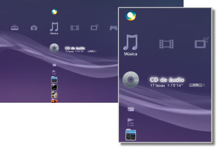

Música > Categoria Música
Categoria Música
Os seguintes ícones são exibidos em  (Música). Os ícones exibidos variam dependendo das condições de uso.
(Música). Os ícones exibidos variam dependendo das condições de uso.

 |
(Nome do título) | Exibe o minipainel de controle. Este ícone será exibido apenas enquanto o conteúdo de música estiver sendo reproduzido. |
|---|---|---|
 |
Pesquisar servidores de mídia | Inicia uma pesquisa dos Servidores de Multimídia DLNA conectados na mesma rede. |
 |
Servidor de multimídia | Conecta-se aos Servidores de Multimídia DLNA e reproduz a música armazenada neles. O ícone exibido varia dependendo do tipo de servidor. |
 |
(nome do título) | Reproduz um Super Audio CD. |
 |
(título do CD) | Reproduz um CD de áudio. |
 |
Disco de dados | Reproduz os arquivos de música gravados na mídia de disco compatível e gravável, como um CD-R ou DVD-R. |
|
Disco DSD | Reproduz os arquivos de música no formato DSD gravados na mídia de disco compatível, como um DVD-R. |
 |
Memory Stick™ | Reproduz os arquivos de música gravados na mídia Memory Stick™.* |
 |
Cartão SD | Reproduz os arquivos de música gravados em um SD Memory Card.* |
 |
CompactFlash® | Reproduz os arquivos de música gravados no CompactFlash®.* |
| PSP™ (PlayStation®Portable) | Reproduz os arquivos de música gravados no Memory Stick™ de um sistema PSP™. | |
 |
PSP™ (PlayStation®Portable) | Reproduz arquivos de música gravados no armazenamento do sistema PSP™go. |
 |
Câmera digital | Reproduz os arquivos de música gravados em uma câmera digital. |
 |
WALKMAN®/ATRAC Audio Device (WALKMAN®) | Reproduz os arquivos de música gravados em um WALKMAN®/ATRAC Audio Device (WALKMAN®). |
 |
ATRAC Audio Device | Reproduz os arquivos de música gravados em um dispositivo de áudio ATRAC. |
 |
Dispositivo USB | Reproduz os arquivos de música gravados em um dispositivo de armazenamento em massa USB. |
 |
Listas de reprodução | Você pode criar, editar ou reproduzir as listas de reprodução. |
 |
(pasta) | Este ícone é exibido para as pastas criadas na mídia de armazenamento utilizando um PC. |
 |
(arquivos salvos no armazenamento do sistema) | Reproduz os arquivos de música salvos no armazenamento do sistema PS3™. Quando os dados da imagem estiverem disponíveis, as imagens em miniatura serão exibidas. |
| * |
Um adaptador USB adequado (não incluído) é necessário para utilizar a mídia de armazenamento com alguns modelos do sistema PS3™. Quando utilizada com um adaptador USB, a mídia de armazenamento será exibida como |
|---|
 (Dispositivo USB).
(Dispositivo USB).Dicas
- Para detalhes sobre o DLNA, veja
 (Configurações) >
(Configurações) >  (Configurações de rede) > [Conexão ao servidor de mídia] neste guia.
(Configurações de rede) > [Conexão ao servidor de mídia] neste guia. - Em raras ocasiões, discos e outras mídias podem não funcionar corretamente quando reproduzidos no sistema PS3™. Isto ocorre principalmente devido às variações no processo de fabricação ou na codificação do software.
- Quando os Super Audio CDs são reproduzidos a partir do conector de saída DIGITAL OUT (OPTICAL) do sistema, ocorre uma reprodução simples (reprodução em 44,1 kHz usando 16 bits).
Atenção
Os Super Audio CDs não podem ser reproduzidos em alguns sistemas PS3™. Para obter detalhes, consulte [Tipos de discos reproduzíveis].